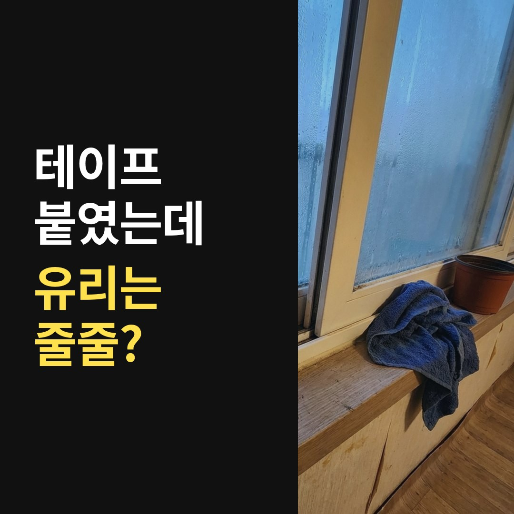
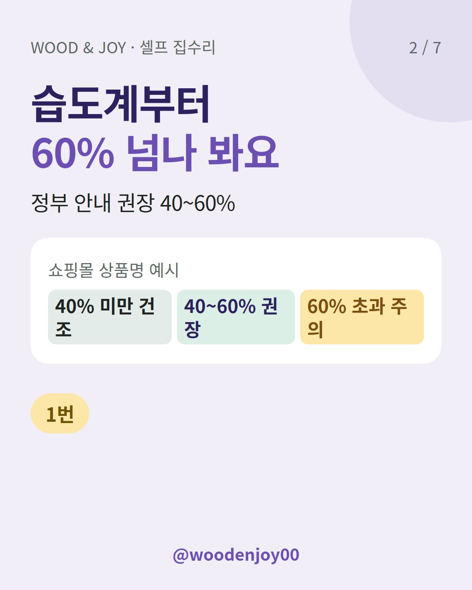
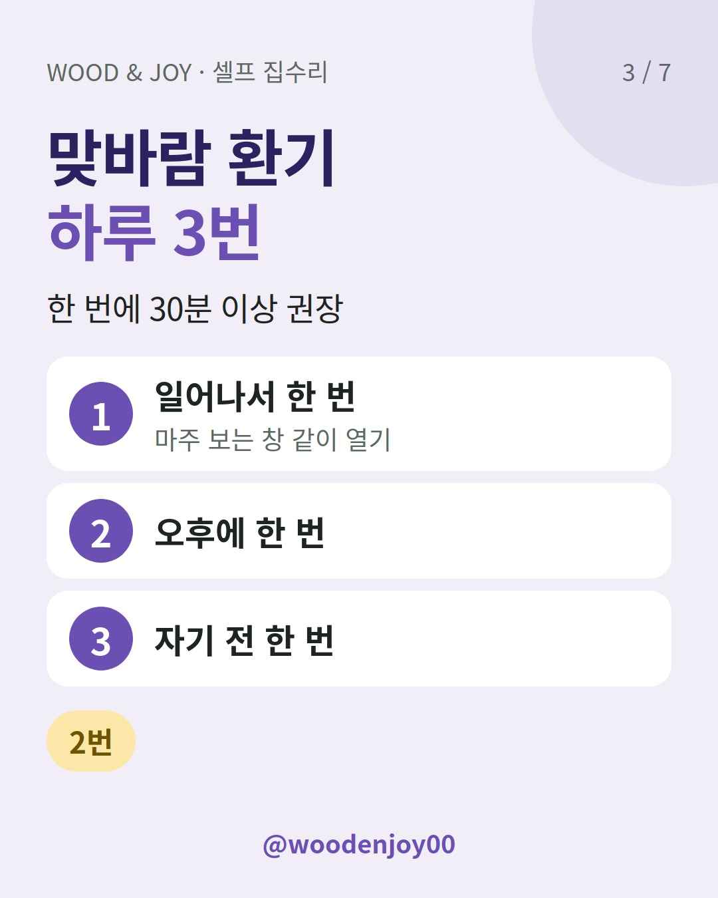

이 포스팅은 쿠팡 파트너스 활동의 일환으로, 이에 따른 일정액의 수수료를 제공받습니다.
결로방지 테이프를 붙였는데도 아침마다 유리창에서 물이 흐른다면, 테이프가 창틀 아래 물만 받는 물건이라 그래요. 유리 물방울은 습도 40~60% 유지, 하루 3번 맞바람 환기, 유리 안쪽 단열로 줄여요.

결로방지 테이프는 창틀 아래 고무 쪽에 고이는 물을 빨아들이는 테이프예요. 유리 전체에 맺히는 물방울에는 효과가 작아요.
결로는 습한 실내 공기가 차가운 유리나 벽에 닿아 물이 되는 현상이에요. 공기 속 물기를 줄이거나 유리를 덜 차갑게 해야 줄어요.
정부 안내(국립환경과학원 자료, 2022년 12월 정책브리핑)는 실내 습도 40~60%예요. 국토교통부 결로 홍보물은 습도 50% 이하, 실내 온도 25도를 적어 뒀어요.

네. 정책브리핑은 마주 보는 창을 같이 여는 맞바람 환기를 하루 3회 이상, 한 번에 30분 이상 하라고 안내해요. 일어나서, 오후에, 자기 전처럼 8시간 간격이 기준이에요.
베란다 결로가 심하면 원형환기구부터 보세요. 국토교통부는 발코니 원형환기구를 늘 열어 두라고 안내해요. 막아 두면 습기가 빠질 데가 없어요.

가구 배치가 다른 경우가 많아요. 국토교통부는 결로가 잘 생기는 환경으로 북쪽 발코니, 가습기·빨래·화분 때문에 높아진 습도, 꼭 닫힌 실내, 벽에 붙인 가구를 꼽았어요.
물이 어디에 맺히는지 보고 고르면 돼요.
| 선택지 | 이런 집 | 주의할 점 |
|---|---|---|
| 결로방지 테이프 | 창틀 아래 고무 쪽에만 물이 고임 | 유리 결로는 못 막음, 뗄 때 끈적임이 남을 수 있음 |
| 뽁뽁이·단열필름 | 유리 전체에 물방울이 맺힘 | 밖이 흐리게 보임, 창틀 자연환기구는 막지 않기 |
| 디지털 온습도계 | 원인을 모르겠고 매일 물이 생김 | 창가 가까이에 둬야 함 |
👉 창문 결로방지 테이프 — 창틀 아래 고무 쪽에만 물이 고이는 집
👉 디지털 온습도계 — 창가 습도부터 재 보고 싶은 집
유리 전체가 젖는 집은 창문용 단열 뽁뽁이 (물부착형)부터 보면 돼요. 붙이는 면은 [뽁뽁이 붙이는 면 글]에서 다뤘어요.
셀프는 여기까지예요. 해마다 같은 벽에 곰팡이가 번지면 정책브리핑 안내대로 건축 전문가에게 물어보고 단열 시공을 검토하세요.
Q. 난방을 세게 틀면 결로가 줄어들까요?
국토교통부는 겨울철 높은 실내 온도를 결로가 잘 생기는 환경으로 꼽았고, 실내 온도는 25도를 기준으로 적었어요.
Q. 창틀 실리콘에 곰팡이가 이미 피었어요.
정책브리핑은 곰팡이 핀 자재를 걷어 낸 뒤에 결로 대책을 하라고 안내해요. 실리콘을 다시 쏠 거라면 실리콘 쏘는법, 초산·비초산·수성 잘못 고르면 다시 뜯어요를 먼저 보세요. 기침이나 피부 증상이 계속되면 병원에서 상담받으세요.
여러분 집은 유리에 물이 맺히나요, 창틀 아래에 고이나요? 댓글로 알려 주세요.
오늘 할 일은 하나예요. 창가에 온습도계를 두고 내일 아침 숫자를 보세요.